Door Lock
Note 1: 4pcs AA batteries 1.5V for power supply
1 CR2032 battery for each remote control
All batteries are removed due to shipping limitation.
Note3: Bluetooth APP name is TTLOCK. optional wifi APP name is TUYA Smart Or EWELINK OR TTLOCK
KitA1: BT lock+1pcs remote
KitA2: BT lock+2pcs remote
KitA3: BT lock+3pcs remote
KitA4: BT lock+4pcs remote
KitA5: BT lock+2pcs remote+eWelink wifi connector
KitA6: BT lock+2pcs remote+TTLOCK wifi gateway
KitA7: BT lock+2pcs remote+Tuya smart wifi connector
Wifi unlock controller better be close to lock, within 10meters. 1pcs wifi connector can control multiple locks if locks are in effective range. wifi connector should be used with a USB power plug, USB power plug is not included in the package.
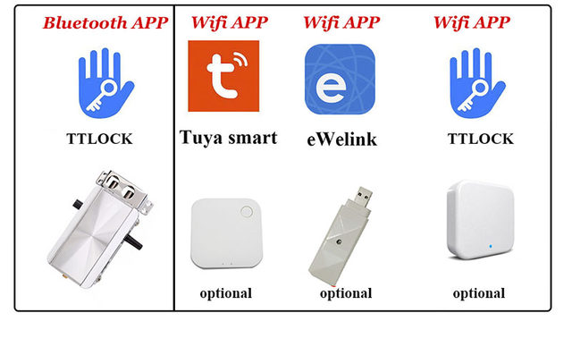
Package list
-TTLOCK BT LOCK
-remote controler（battery removed)
-Installation accessories
-English Lock manual
-Tuya smart connector (Optional)
--Ewelink USB connector (Optional)
-G2 wifi gateway (optional)
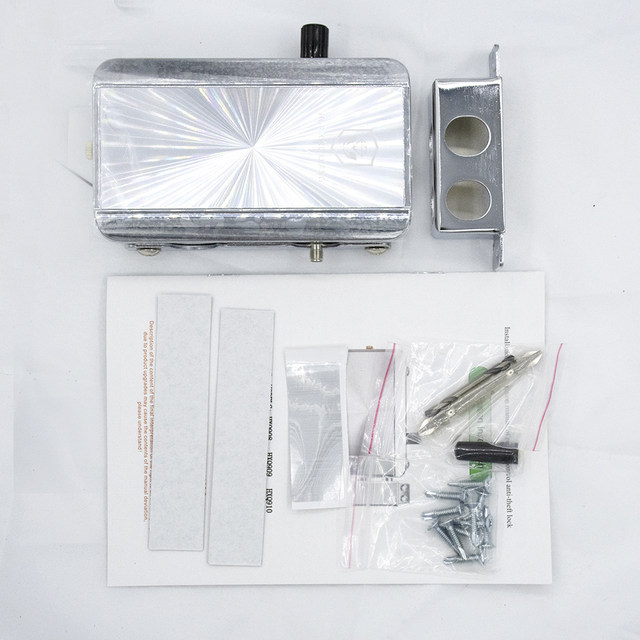
Item features
Features:
-Different ways to open and close, Remote control/Bluetooth/Manual knob
-Easy and firm installation with the external mounting plate
-Remote controls with rolling code, it cannot be decoded or duplicated
-Made of stainless steel
-Suit for: For swing door in office \ home \ hotel \ Anti-theft door \ Corridor door \ Wooden doors \ garage door\shop\workshop and etc.
Specifications:
-Maximum distance of remote control: 10M (open distance can be farther)
-Power supply: 4AA ALKALINE batteries (battery removed due to shipping limitation)
-Battery life: 4 batteries can last up to 16months in standby mode
-Operating temperature: -20~80degree
-Humidity between 5% and 60%
-Dimensions:130 x 75 x 33mm
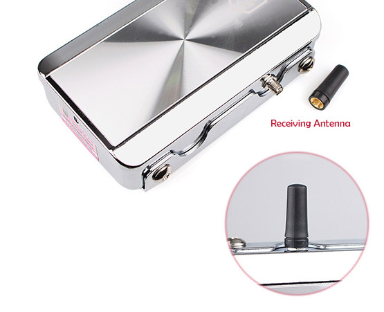
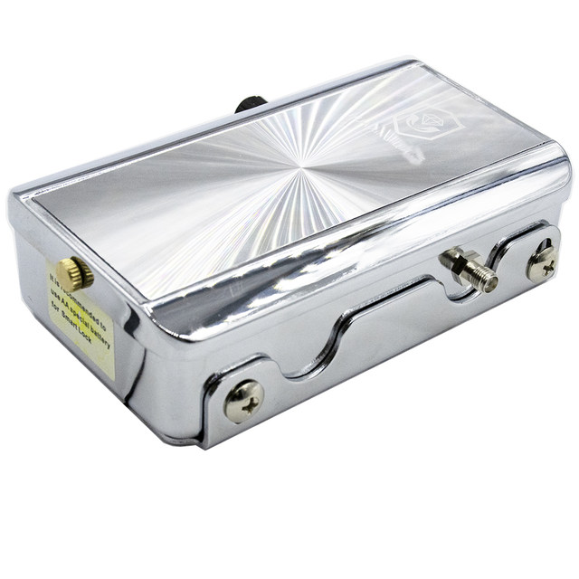
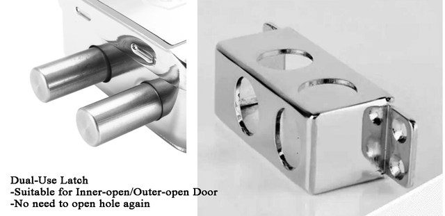
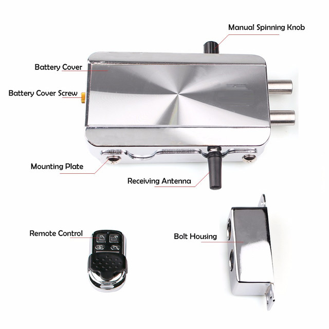
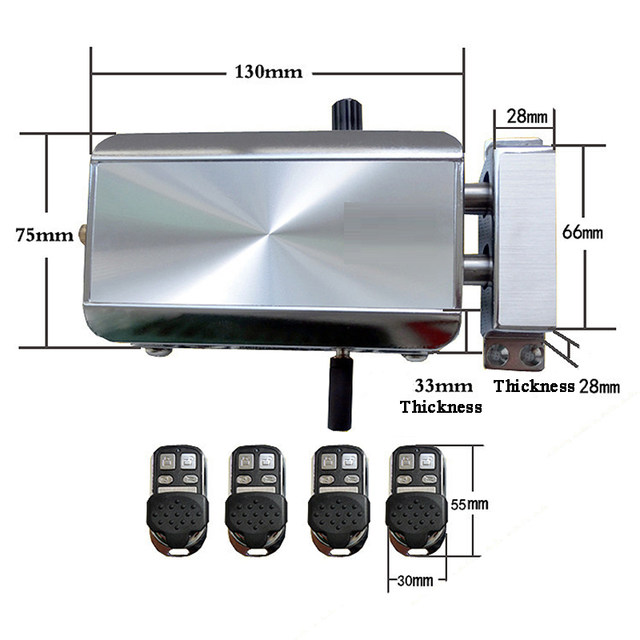
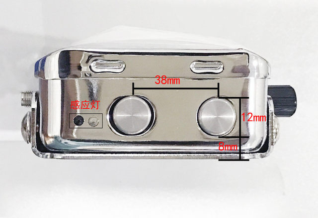
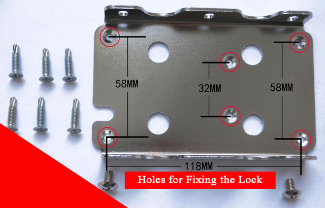
For ewelink wifi unlock controler/connector (optional)
Connect it to wifi router and control via eWelink or tuya smart APP, you can unlock or lock the door kilometers away.
With ewelink or tuya smart wiifi controler, you can set up lock open /close schedule timer in app
USB type POWER PLUG not included
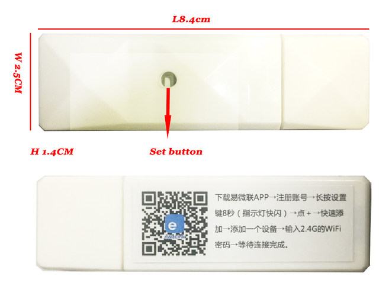
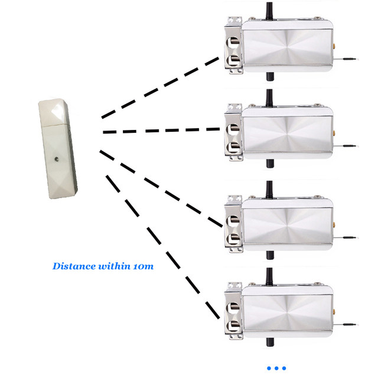
For tuya smart Wifi connector or controller (OPTIONAL)
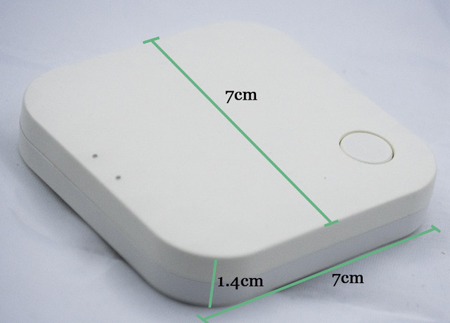
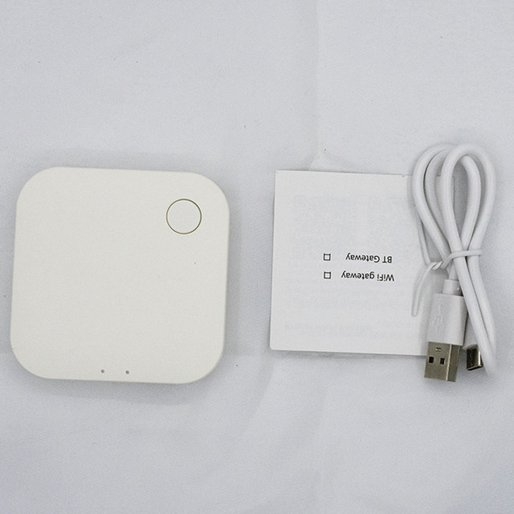
If need more remote controler, click image below to order please
If need lock without any bluetooth but remote battery included, you can click image below to order
If need TTLOCK version ivisible lock, you can click image below to order